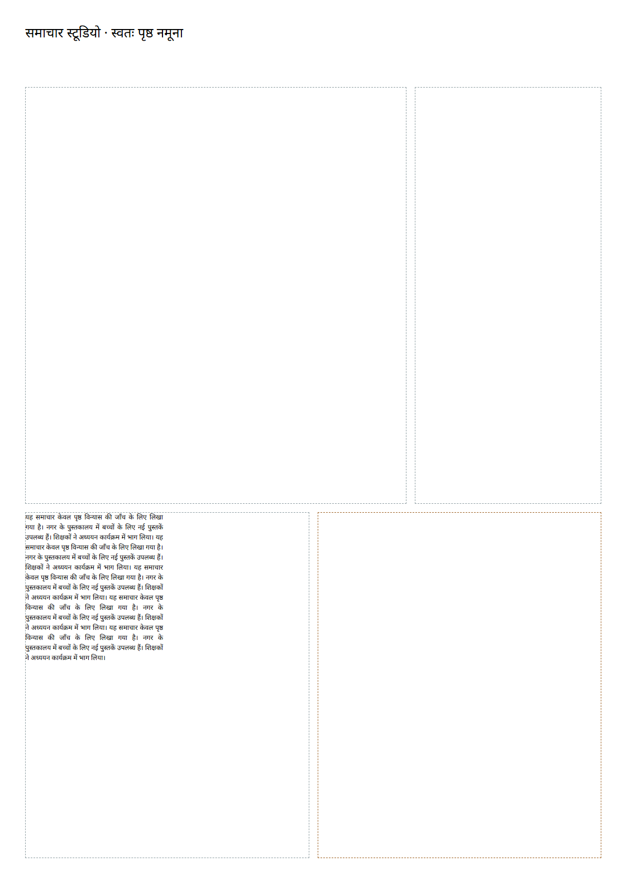
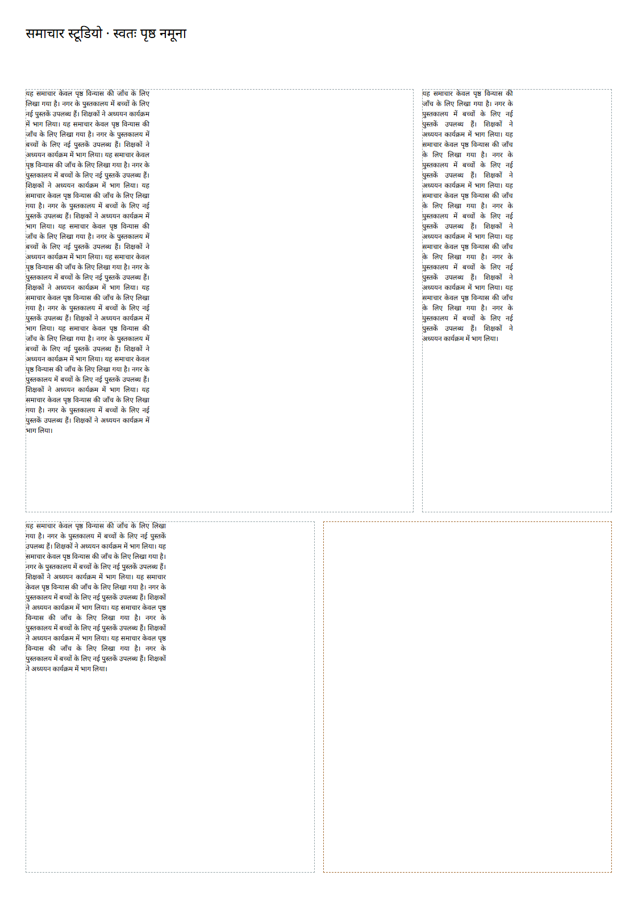

Priority assigns whole synthetic stories to empty slots using bundled Hindi fonts. Existing placement stays in place; the dashed amber slot stays locked.


| Story | Frame | Action |
|---|---|---|
| lead | p1-lead | place-story |
| secondary | p1-secondary | place-story |
| Story | Fit lines | Rendered lines |
|---|---|---|
| existing | 15 | 15 |
| lead | 34 | 34 |
| secondary | 25 | 25 |
Chromium console errors: 0. Proposal, ops, inverses and checks · Owned synthetic input.
Existing ops accept each listed change; their inverses restore the original document. See docs/autopage.md for the API and limits.